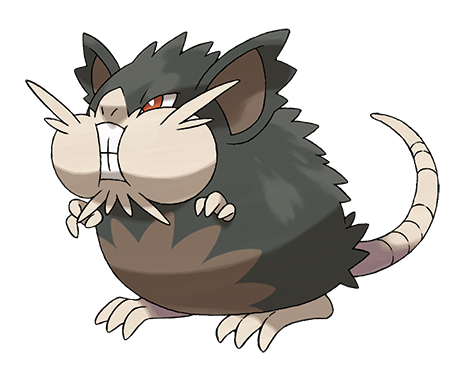
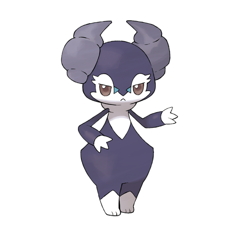
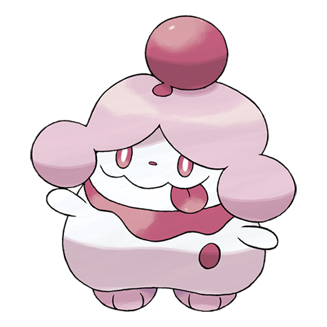
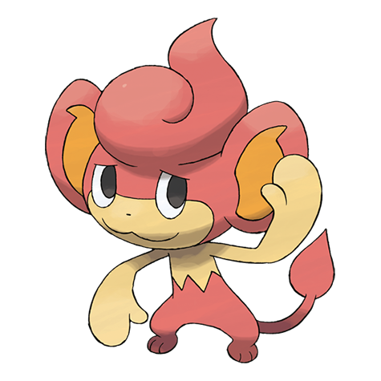
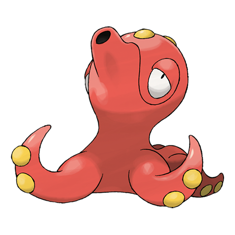
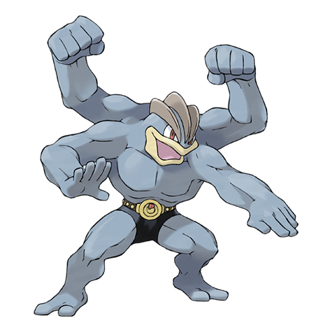
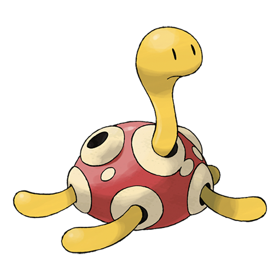
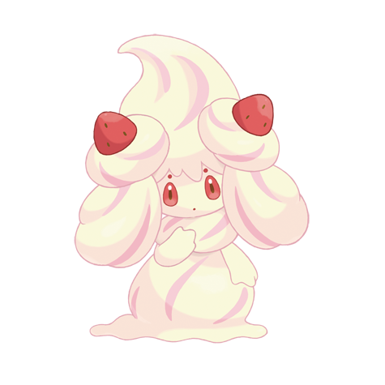
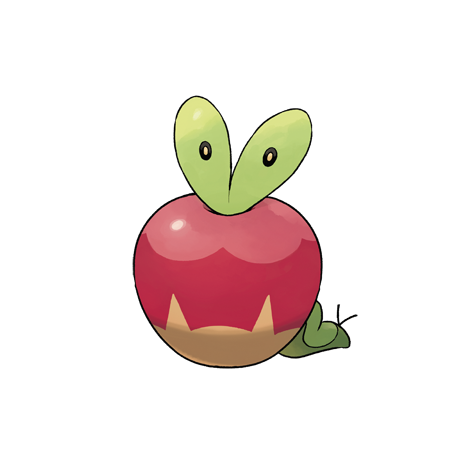

Radicate:
In Radicates Moon dex entry it states, "This gourmet Pokémon is particular about the taste and freshness of its food. Restaurants where Raticate live have a good reputation." You may not feel to0 eager to have a rat in your kitchen but this guy is clearly a gourmet, and if Ratatouille can do it and run an entire restaurant, then I think Raticate can do it too.

Indeedee:
In Indeedee's Pokedex entry it states, "It uses the horns on its head to sense the emotions of others. Males will act as valets for those they serve, looking after their every need." I would think this includes having those valets help with cooking meals, and basically doing all the work without Indeedee having to lift a finger.

Slurpuff:
In the Super Deluxe Essential Handnook entry for Slurpuff it states, "Pastry chefs love having a Slurpuff in the kitchen. With its incredibly sensitive nose, it can tell exactly when a dessert is baked to perfection." Having Slurpuff in the kitchen would be a huge help as you wouldn't need to set any timers or worry about checking on the food as Slurpuff would just be able to sniff out when the food is ready!

Pansear:
In Pansear's Pokedex entry from Black 2/White 2 it states, "Very intelligent, it roasts berries before eating them. It likes to help people." Pansear can be a bit erratic and silly but with enough practice and effort put in from the trainer, I believe they could be a huge asset in the kitchen and help out with roasting the simpler foods so you and other chefs could focus on more important things.

Octillery:
Similar to Pansear, Octillery has the ability to use fire through moves such as Flamethrower. With it's multidude of tentacles it'd be able to help out with cooking multiple different meals at once. In the rare occasions things go wrong and a fire breaks out, Octillery would be able to use it's water-type moves to put out fires and fill up bowls or pots with water!

Machamp:
Similar to Octillery, Machamp has multiple arms (4) and would be more than able to help out with moving around plates and ingredients. Machamp is a strong fighting type and if there was ever a situation that called for lots of upper arm strength, like moving a large box of produce or big pots of soup. If you feel that Machamp might be too big to have in the kitchen due to space, he would be a great sever when it comes to bring out plates and lowering the turn around times.

Shuckle:
Shuckle is a small turtle-like Pokémon that has the ability to store berries in it's shell and ferment them into Shuckle juice! This is the start more questionable entries as technically you'd be consuming a part of Shuckle if you decide to indulge in drinking the juice. Though if you're fine with that, Shuckle would make a valuable asset as they'd be able to create drinks for people with ease, and if any of the ingreidents being used needed to go through fermentation Shuckle would be more than willing to help out!

Alcremie
Alcremie is also a questionable entry as it's purpose would be helping to create desserts with the cream it produces. Though through the series, Pokemon and human chracters seemed to have no issue with consuming parts of Alcremie so why should you?